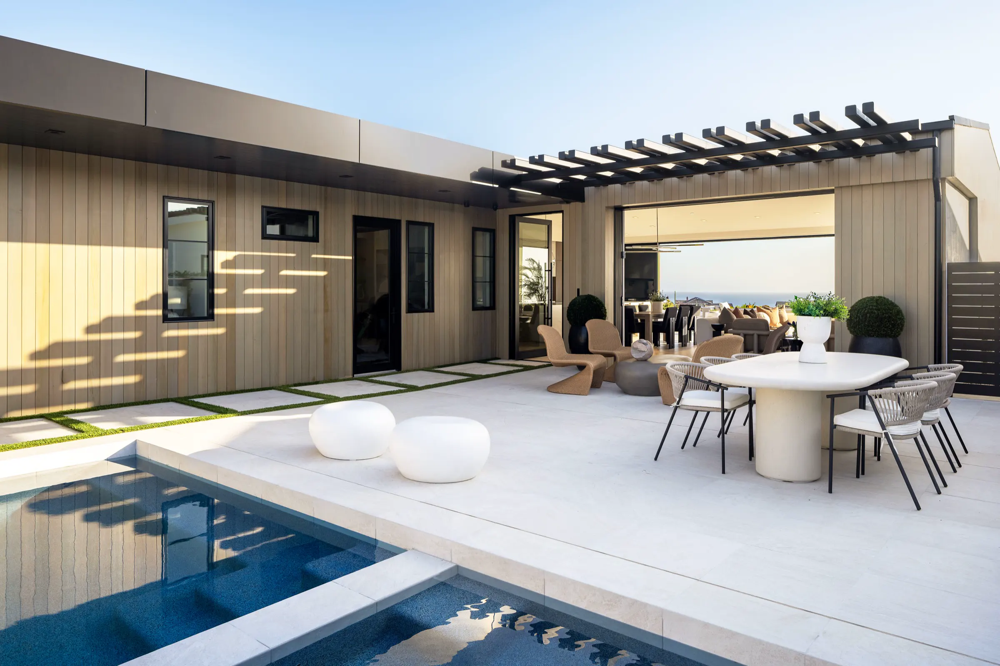
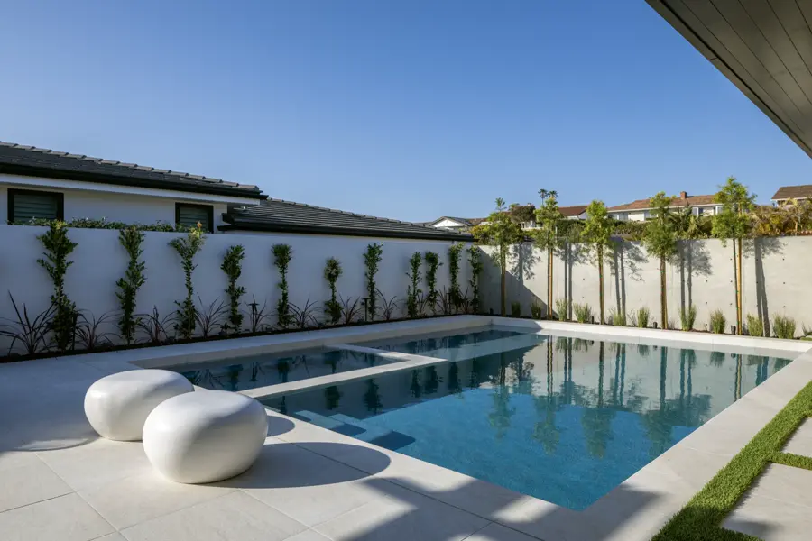
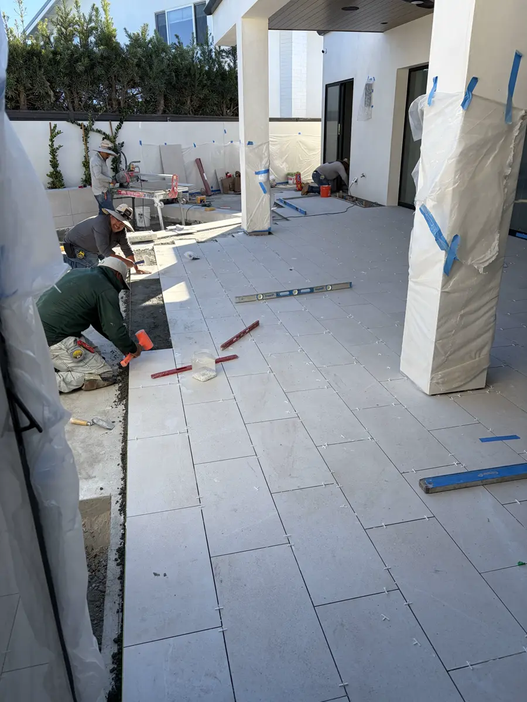
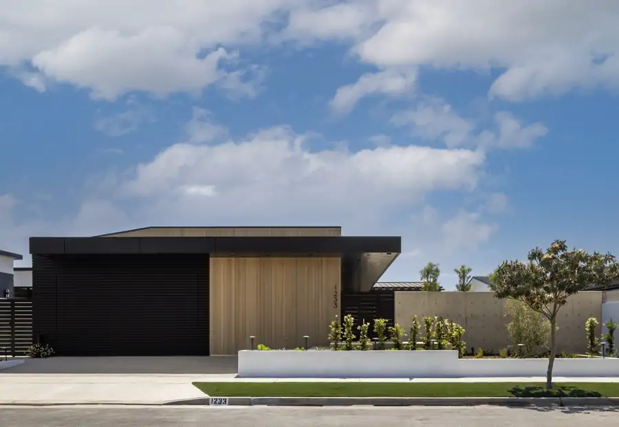
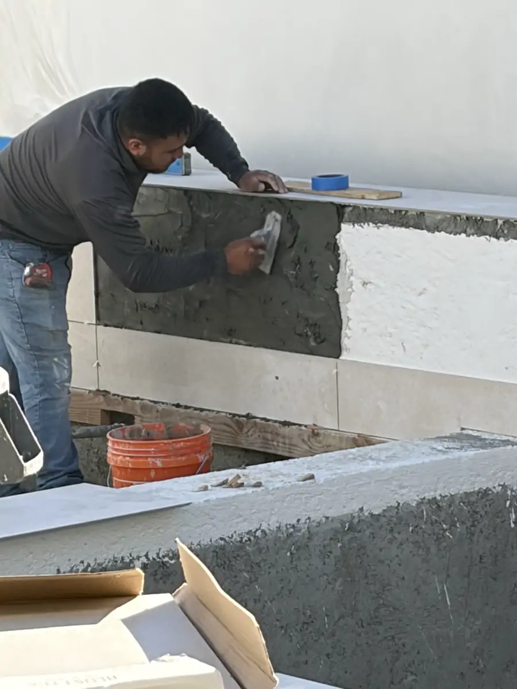

Our work and experience
Craftsmanship built on experience.
Every exceptional project begins with skilled hands, attention to detail and a commitment to quality.
Our foundation includes the hands on construction experience of Luis Ordunez and the craftsmen who work alongside him. Below are selected projects completed by GALO Masonry, Inc., along with work our field leadership and crews did before GALO. Each photo says which is which.







